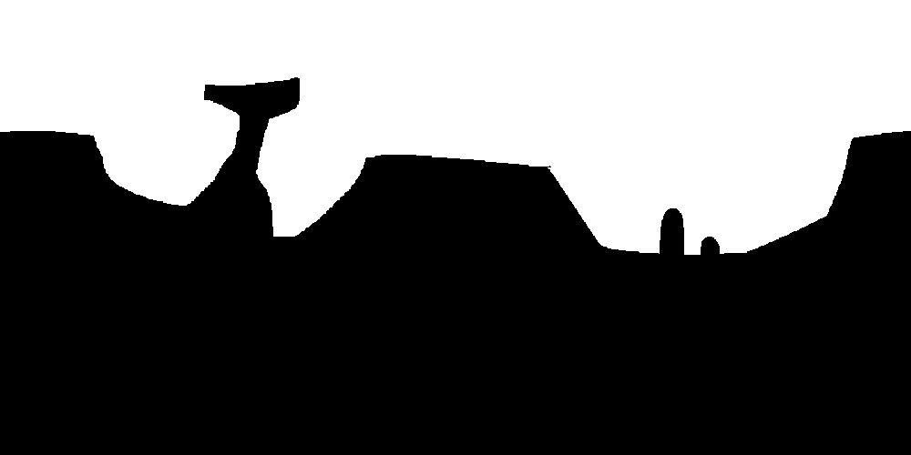

Sébastien Caparros
Some developer's blog
Le projet du moment
Depuis quelque temps maintenant, je bosse sur le développement d'un jeu multijoueurs en 2D (style plateforme).
Je n'ai encore défini aucun élément de gameplay précis, mais j'ai quelques idées de réalisations techniques intéréssantes.

Côté client, le jeu est développé en HTML5 pur. Le rendu est assuré par un canvas.
J'ai d'ailleurs pu expérimenter un bon paquet de fonctionnalités intéréssantes de HTML5, comme l'API fullscreen, les différentes fonctionnalités audio (ainsi que leurs problèmes actuels pour lesquels nous pouvons remercier Microsoft et Apple ...), le localStorage, la fonction requestAnimationFrame (qui permet de synchroniser la fréquence d'affichage d'un élément - Canvas par exemple - avec la fréquence d'affichage du navigateur) et surtout les WebSockets.
J'assure la compatibilité avec l'ensemble des navigateurs à grand renfort de polyfills. Cette méthode à l'avantage de garder des sources propres et standards et de bien séparer le code en lui même de ce qui sert à la compatibilité. Par contre je n'ai toujours pas testé sous Safari ou IE, il faudra que je m'en occupe un jour (mais il est peu probable que je perde mon temps avec IE8).
La map du jeu est constituée de deux fichiers qui sont des images gif tout ce qu'il y a de plus standard. L'une contient la partie visible de la map (le décor) tandis que l'autre est son "ombre" en quelque sorte, qui servira a gérer la physique. Aujourd'hui, ce second fichier contient du noir pour les parties solides, et du transparent pour le vide. En jouant sur les codes couleur, je pourrais par la suite ajouter facilement des fonctionnalités un peu plus poussées (zones qui peuvent être détruites, zones d'eau, zones mortelles ...).

A gauche la partie visible de la map. A droite, celle permettant la gestion de la physique.
(L'image n'est pas de moi, elle vient d'ici.)
{kind=link}
{kind=link}
Côté serveur, c'est du Java. Le serveur HTTP est intégré dans l'application (pas besoin d'installer Apache ou autre) pour permettre notamment le chargement dynamique des deux images de la map lorsqu'un client se connecte en cours de partie (je prévois que le terrain puisse subir des dégâts). Avec un serveur externe, ca aurait été plus compliqué à mettre en oeuvre.
Au début, j'avais opté pour un serveur HTTP très simple et fait à la main, avec une librairie pour gérer les websockets. Le problème de cette solution, c'est qu'il fallait occuper deux ports pour les deux serveurs (alors que le protocole websockets s'implante normalement sur HTTP), que je ne connaissait absolument pas le fonctionnement interne de la librairie, et qu'il allait falloir gérer le multi-threading du serveur HTTP (c'était des sockets en java.io).
Après quelques prises de tête avec java.nio (qui peut faire des sockets de manière asynchrone, et donc sans devoir créer un thread par client), j'ai finalement opté pour la librairie Grizzly. Son utilisation est simple, elle utilise java.nio et elle s'intègre comme une simple librairie, sans devoir créer 50 fichiers de configuration ou écrire trois pages de code supplémentaires.